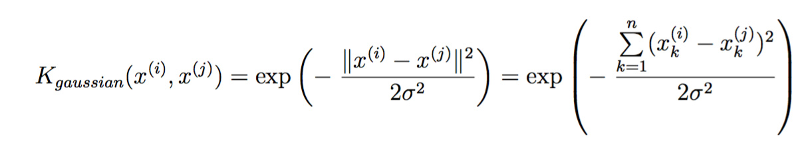
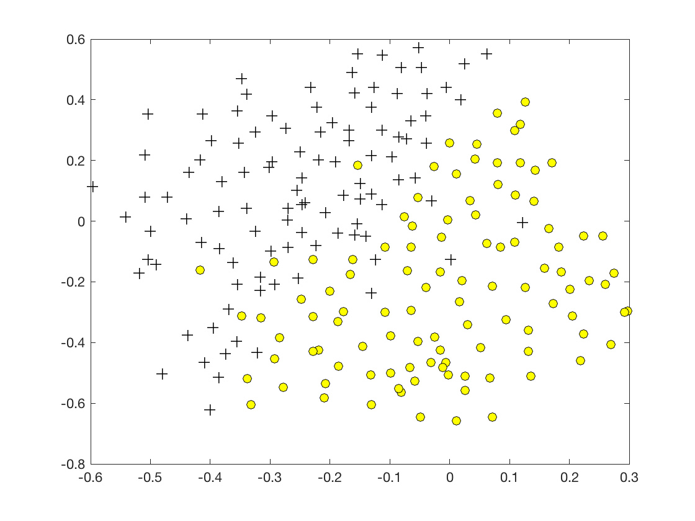
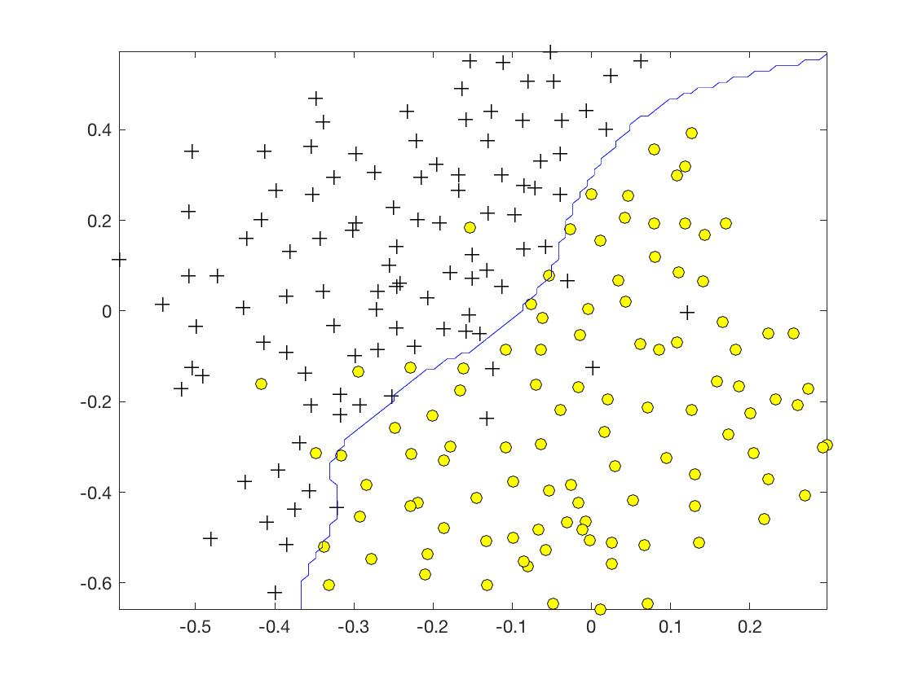

斯坦福ML（Matlab
斯坦福ML（Matlab ）公开课，本次练习试验支持向量机，并应用于垃圾邮件分类。代码本身非常简单，理论知识参考《统计学习方法》或公开课视频。
）公开课，本次练习试验支持向量机，并应用于垃圾邮件分类。代码本身非常简单，理论知识参考《统计学习方法》或公开课视频。
支持向量机
这部分先在多个2D数据集上熟悉熟悉SVM和惩罚参数。
线性可分数据
简单的线性可分数据集：

不要求实现SVM训练（实现可参考http://www.hankcs.com/ml/support-vector-machine.html），只要求使用不同的惩罚因子C（类似于正则化的 ）调用写好的训练代码即可。C控制着对误分类的惩罚力度，C越大，SVM越努力地试图将训练样本全分对。
）调用写好的训练代码即可。C控制着对误分类的惩罚力度，C越大，SVM越努力地试图将训练样本全分对。
当C=1时，

几何间隔很大，模型泛化能力应该不错。
当C=100时，

几何间隔很小，过拟合了。
SVM和高斯核
对于非线性可分数据，就必须上核函数了。比如这个数据集：

高斯核
高斯核函数定义为：

实现如下：
- function sim = gaussianKernel(x1, x2, sigma)
- %RBFKERNEL returns a radial basis function kernel between x1 and x2
- % sim = gaussianKernel(x1, x2) returns a gaussian kernel between x1 and x2
- % and returns the value in sim
- % Ensure that x1 and x2 are column vectors
- x1 = x1(:); x2 = x2(:);
- % You need to return the following variables correctly.
- sim = 0;
- % ====================== YOUR CODE HERE ======================
- % Instructions: Fill in this function to return the similarity between x1
- % and x2 computed using a Gaussian kernel with bandwidth
- % sigma
- %
- %
- sim = exp(-(x1 - x2)' * (x1 - x2) / (2 * sigma ^2))
- % =============================================================
- end
Instruction里面说高斯核是求the similarity between x1 and x2，的确是个很深刻的解释。我以前都没注意到，高斯核里面不就是个欧氏距离公式嘛。
决策边界可视化如下：
可视化代码也不要求实现，但斯坦福给的代码在matlab2016b上面无法绘制决策边界，我认为是浮点数精度的问题，将限制放宽松一些即可：
- contour(X1, X2, vals, [0 0], 'Color', 'b');
改为：
- contour(X1, X2, vals, [0 0.5], 'Color', 'b');
还可以在另外一个数据集上做做试验：

决策边界：

垃圾邮件分类
其实就是文本分类的应用了。
预处理
对于这样一封邮件
- > Anyone knows how much it costs to host a web portal ?
- >
- Well, it depends on how many visitors youre expecting. This can be
- anywhere from less than 10 bucks a month to a couple of $100. You
- should checkout http://www.rackspace.com/ or perhaps Amazon EC2 if
- youre running something big..
- To unsubscribe yourself from this mailing list, send an email to:
- groupname-unsubscribe@egroups.com
进行如下预处理
-
大写转小写
-
去除HTML标签
-
URL、邮箱地址、数字、美元替换为标记符
-
单词形态转换
-
去掉标点符号
实现如下：
- function word_indices = processEmail(email_contents)
- %PROCESSEMAIL preprocesses a the body of an email and
- %returns a list of word_indices
- % word_indices = PROCESSEMAIL(email_contents) preprocesses
- % the body of an email and returns a list of indices of the
- % words contained in the email.
- %
- % Load Vocabulary
- vocabList = getVocabList();
- % Init return value
- word_indices = [];
- % ========================== Preprocess Email ===========================
- % Find the Headers ( \n\n and remove )
- % Uncomment the following lines if you are working with raw emails with the
- % full headers
- % hdrstart = strfind(email_contents, ([char(10) char(10)]));
- % email_contents = email_contents(hdrstart(1):end);
- % Lower case
- email_contents = lower(email_contents);
- % Strip all HTML
- % Looks for any expression that starts with < and ends with > and replace
- % and does not have any < or > in the tag it with a space
- email_contents = regexprep(email_contents, '<[^<>]+>', ' ');
- % Handle Numbers
- % Look for one or more characters between 0-9
- email_contents = regexprep(email_contents, '[0-9]+', 'number');
- % Handle URLS
- % Look for strings starting with http:// or https://
- email_contents = regexprep(email_contents, ...
- '(http|https)://[^\s]*', 'httpaddr');
- % Handle Email Addresses
- % Look for strings with @ in the middle
- email_contents = regexprep(email_contents, '[^\s]+@[^\s]+', 'emailaddr');
- % Handle $ sign
- email_contents = regexprep(email_contents, '[$]+', 'dollar');
- % ========================== Tokenize Email ===========================
- % Output the email to screen as well
- fprintf('\n==== Processed Email ====\n\n');
- % Process file
- l = 0;
- while ~isempty(email_contents)
- % Tokenize and also get rid of any punctuation
- [str, email_contents] = ...
- strtok(email_contents, ...
- [' @$/#.-:&*+=[]?!(){},''">_<;%' char(10) char(13)]);
- % Remove any non alphanumeric characters
- str = regexprep(str, '[^a-zA-Z0-9]', '');
- % Stem the word
- % (the porterStemmer sometimes has issues, so we use a try catch block)
- try str = porterStemmer(strtrim(str));
- catch str = ''; continue;
- end;
- % Skip the word if it is too short
- if length(str) < 1
- continue;
- end
- % Look up the word in the dictionary and add to word_indices if
- % found
- % ====================== YOUR CODE HERE ======================
- % Instructions: Fill in this function to add the index of str to
- % word_indices if it is in the vocabulary. At this point
- % of the code, you have a stemmed word from the email in
- % the variable str. You should look up str in the
- % vocabulary list (vocabList). If a match exists, you
- % should add the index of the word to the word_indices
- % vector. Concretely, if str = 'action', then you should
- % look up the vocabulary list to find where in vocabList
- % 'action' appears. For example, if vocabList{18} =
- % 'action', then, you should add 18 to the word_indices
- % vector (e.g., word_indices = [word_indices ; 18]; ).
- %
- % Note: vocabList{idx} returns a the word with index idx in the
- % vocabulary list.
- %
- % Note: You can use strcmp(str1, str2) to compare two strings (str1 and
- % str2). It will return 1 only if the two strings are equivalent.
- %
- for idx = 1:1899
- if(strcmp(str, vocabList{idx}) == 1)
- word_indices = [word_indices ; idx];
- end
- end
- % =============================================================
- % Print to screen, ensuring that the output lines are not too long
- if (l + length(str) + 1) > 78
- fprintf('\n');
- l = 0;
- end
- fprintf('%s ', str);
- l = l + length(str) + 1;
- end
- % Print footer
- fprintf('\n\n=========================\n');
- end
这段代码一看就很垃圾，连个Map Container都不用，非要用strcmp一个个去找。
特征提取
很低级的特征提取，特征向量每一维都是一位二进制，代表第i个词语是否出现。

- function x = emailFeatures(word_indices)
- %EMAILFEATURES takes in a word_indices vector and produces a feature vector
- %from the word indices
- % x = EMAILFEATURES(word_indices) takes in a word_indices vector and
- % produces a feature vector from the word indices.
- % Total number of words in the dictionary
- n = 1899;
- % You need to return the following variables correctly.
- x = zeros(n, 1);
- % ====================== YOUR CODE HERE ======================
- % Instructions: Fill in this function to return a feature vector for the
- % given email (word_indices). To help make it easier to
- % process the emails, we have have already pre-processed each
- % email and converted each word in the email into an index in
- % a fixed dictionary (of 1899 words). The variable
- % word_indices contains the list of indices of the words
- % which occur in one email.
- %
- % Concretely, if an email has the text:
- %
- % The quick brown fox jumped over the lazy dog.
- %
- % Then, the word_indices vector for this text might look
- % like:
- %
- % 60 100 33 44 10 53 60 58 5
- %
- % where, we have mapped each word onto a number, for example:
- %
- % the -- 60
- % quick -- 100
- % ...
- %
- % (note: the above numbers are just an example and are not the
- % actual mappings).
- %
- % Your task is take one such word_indices vector and construct
- % a binary feature vector that indicates whether a particular
- % word occurs in the email. That is, x(i) = 1 when word i
- % is present in the email. Concretely, if the word 'the' (say,
- % index 60) appears in the email, then x(60) = 1. The feature
- % vector should look like:
- %
- % x = [ 0 0 0 0 1 0 0 0 ... 0 0 0 0 1 ... 0 0 0 1 0 ..];
- %
- %
- for i = 1:length(word_indices)
- x(word_indices(i)) = 1;
- end
- % =========================================================================
- end
训练分类器
特征向量有了，剩下的就跟普通的数据集一摸一样了。
- %% =========== Part 3: Train Linear SVM for Spam Classification ========
- % In this section, you will train a linear classifier to determine if an
- % email is Spam or Not-Spam.
- % Load the Spam Email dataset
- % You will have X, y in your environment
- load('spamTrain.mat');
- fprintf('\nTraining Linear SVM (Spam Classification)\n')
- fprintf('(this may take 1 to 2 minutes) ...\n')
- C = 0.1;
- model = svmTrain(X, y, C, @linearKernel);
- p = svmPredict(model, X);
- fprintf('Training Accuracy: %f\n', mean(double(p == y)) * 100);
得到：
- Training Accuracy: 99.825000
- Evaluating the trained Linear SVM on a test set ...
- Test Accuracy: 98.500000
你看，这么弱的特征+线性核也能拿到这么高的分数，可见SVM还是很好用的。